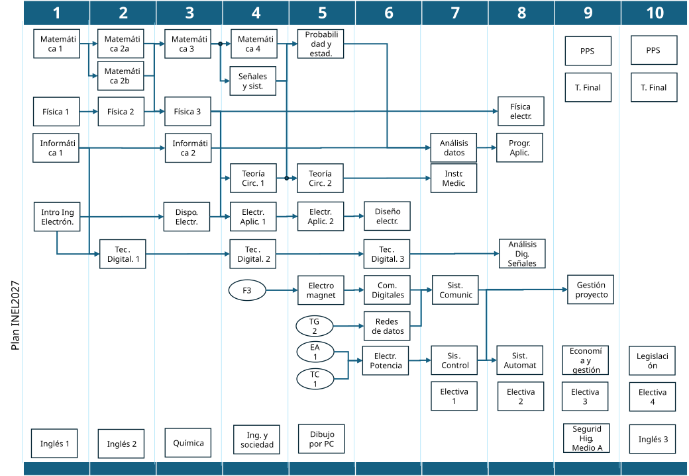
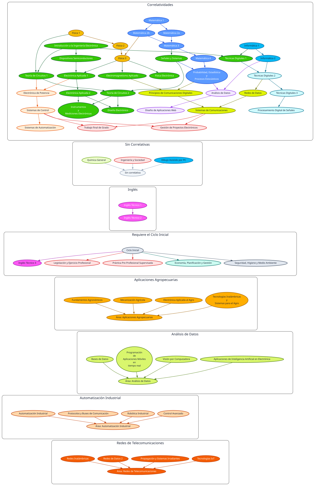

📆 Plan 2011
Asignatura
Estado
Obligatorias aprobadas: 0
Redes: 0
Multimedia: 0
Agro: 0
Mayor orientación: 0
Obligatorias (29)
Redes (11)
Multimedia (12)
Agro (13)
📘 Plan 2027
Asignatura
Equivalencia / estado
Asignaturas aprobadas: 0
Faltan aprobar: 50
Nota: Probabilidad y estadística requiere rendir el módulo Procesos estocásticos para obtener la equivalencia. Se trata de un examen múltiple choice en fechas de finales. Se dará la teoría a través del Campus Virtual.
En Agro y Multimedios no se completan las "48 materias + Inglés 3 + Electrónica de Potencia" en el simulador.
Diagrama Plan 2027

Contracursada
Sin contracursada
Titulo intermedio tras finalizar el sexto cuatrimestre
Video explicativo
Electivas: Aplicaciones Agropecuarias
| Asignatura | Código | Equivalencia | Cuatrimestre |
|---|---|---|---|
| Fundamentos Agronómicos | 200401-A | 2017A | Fundamentos Agronómicos I | 7º |
| Mecanización Agrícola | 200402-A | 2037A | Mecanización Agrícola | 8º |
| Electrónica Aplicada al Agro | 200502-A | 2043A | Electrónica Aplicada al Agro | 10º |
| Tecnología Inalámbrica y Sistemas para el Agro | 200502-A | 2045A | Tecnología Inalámbrica para el Agro | 9º |
Electivas: Análisis de Datos
| Asignatura | Código | Equivalencia | Cuatrimestre |
|---|---|---|---|
| Base de Datos | 200401-D | Las asignaturas específicas y/o electivas de Multimedios o Redes | 7º |
| Programación de Aplicaciones Móviles en tiempo real | 200402-D | Las asignaturas específicas y/o electivas de Multimedios o Redes | 8º |
| Visión por Computadora (Computer Vision) | 200501-D | Las asignaturas específicas y/o electivas de Multimedios o Redes | 9º |
| Aplicaciones de Inteligencia Artificial en Electrónica | 200502-D | Las asignaturas específicas y/o electivas de Multimedios o Redes | 10º |
Electivas: Automatización Industrial
| Asignatura | Código | Equivalencia | Cuatrimestre |
|---|---|---|---|
| Automatización Industrial | 200401-I | Las asignaturas específicas y/o electivas de Multimedios o Redes | 7º |
| Protocolos de Buses y Comunicación | 200402-I | Las asignaturas específicas y/o electivas de Multimedios o Redes | 8º |
| Robótica Industrial | 200501-I | Las asignaturas específicas y/o electivas de Multimedios o Redes | 9º |
| Control Avanzado | 200502-I | Las asignaturas específicas y/o electivas de Multimedios o Redes | 10º |
Electivas: Redes de Telecomunicaciones
| Asignatura | Código | Equivalencia | Cuatrimestre |
|---|---|---|---|
| Redes Inalámbricas | 200401-T | Las asignaturas específicas y/o electivas de Multimedios o Redes | 7º |
| Redes de Datos 2 | 200402-T | Las asignaturas específicas y/o electivas de Multimedios o Redes | 8º |
| Propagación y Sistemas Irradiantes | 200501-T | Las asignaturas específicas y/o electivas de Multimedios o Redes | 9º |
| Tecnologías IoT | 200502-T | Las asignaturas específicas y/o electivas de Multimedios o Redes | 10º |
Asignaturas específicas y/o electivas cursadas de Multimedios, Redes y Agro
| Código | Asignatura | ||
|---|---|---|---|
| Multimedios | Redes | Agro | |
| 2017M/R | Óptica y Sonido | Redes IA | |
| 2028M/R | Imagen y Acústica | Redes IB | |
| 2037M/R | Grabación | Redes IIA | |
| 2043M | Audio Digital | ||
| 2045M/R | Sistema de Video I | Sistemas de Comunicaciones I | |
| 2053M/R/A | Sistemas de Video II | Redes IIB | Sistemas de Posicionamiento Satelital |
| 2062M/R/A | Televisión Digital | Sistemas Distribuidos | Sensores y Buses de Comunicación |
| 2064M/R | Ruido Acústico | Redes III | |
| 2071A | Sistemas para Agro Meteorología | ||
| 2072M/R | Mastering y Post Producción de Sonido | Antenas y Propagación | |
| 2073A | Sistemas de Teledetección | ||
| 2074R | Sistemas de Comunicaciones III | ||
Correlativas

Matemática
Física
Tecnología Básica en Electrónica
Informática
Digital
Comunicaciones
Automatización
Análisis de Datos
Práctica Integradora Ingeniería en Electrónica